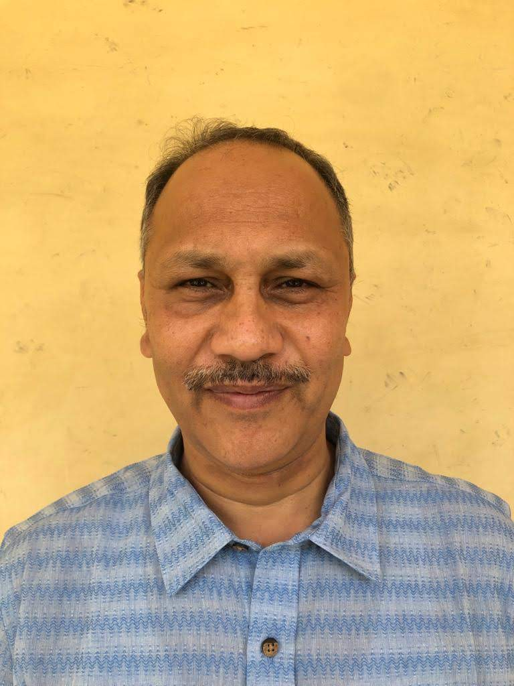
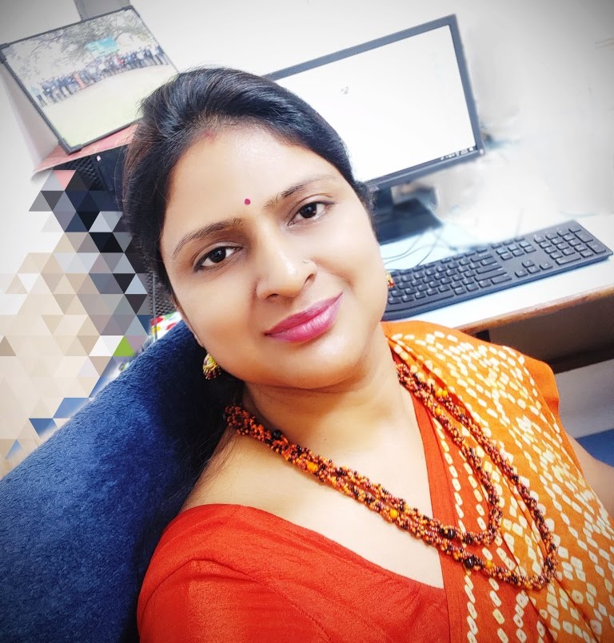
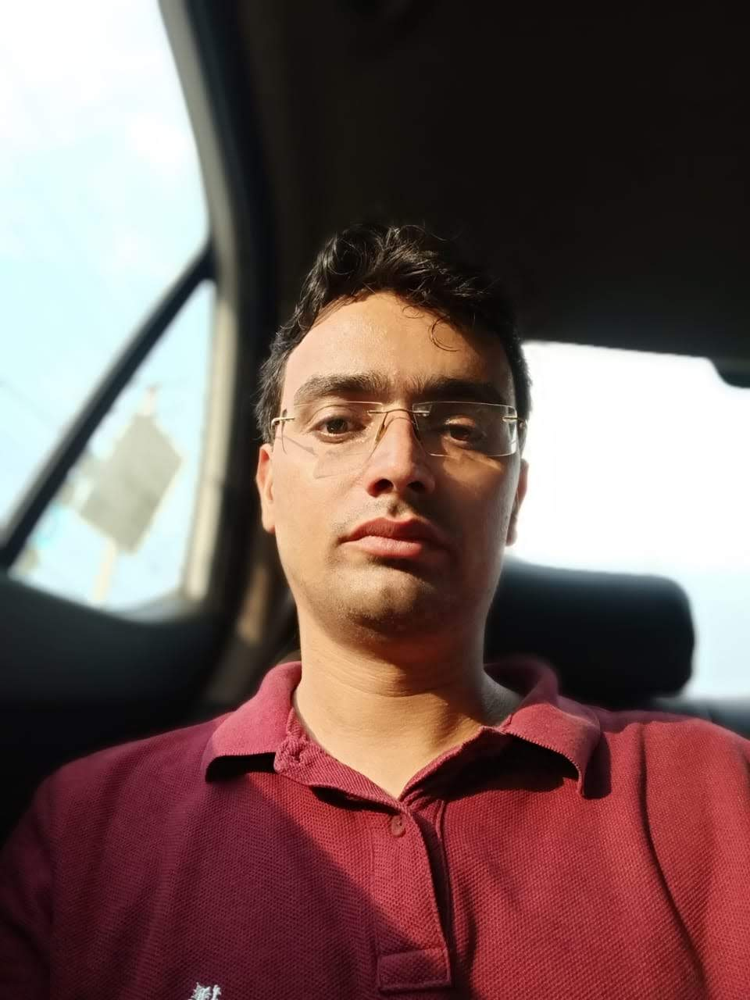

Welcome to National Service Scheme


NSS(National service scheme) is a government platform that provides the young and bright generation of India with an opportunity to serve the nation while being devoted to their studies .
NSS tries to deal with all the problems faced by the people of country at their personal level.
The motto of NSS is not me but you .This platform is made to help the needy and at the same time to make the young generation of India realise their responsibility towards their nation at an early age .
The scheme was launched in Gandhiji's Centenary year in 1969 .
The symbol for the NSS has been based on the giant Rath Wheel of the world-famous Konark Sun Temple (The Black Pagoda) situated in Odisha, India .
The wheel portrays the cycle of creation, preservation and release .
It signifies the movement in life across time and space, the symbol thus stands for continuity as well as change and implies the continuous striving of NSS for social change.
NSS song uthe samaj ke liye is made to make young India realise their potential in making the country a better place to live .
NSS day is celebrated on 24th September every year.
NSS is a voluntary association of young people in Colleges, Universities and at +2 level working for a campus-community (esp. Villages) linkage.
The aim of NSS is
make to fight anything that hinders the growth of our country.
Starting from making people aware about the various toxins of the society to actually going and spending their time at old age homes and orphanages , NSS is an one-in-all platform.
NSS is one such organisation that produces hardworking and dedicated country lovers every year and they would continue to do so till eternity.

Dr. Dinesh Kumar Vice Chanchlor |

Dr. Pradeep Dimri NSS University Coordinator |

Dr. Bindu Mangla Program Officer |

Mr. Nitin Panwar Program Officer |

Mr. Umesh Kumar Program Officer |
NSSJCBUST Faridabad is an university living with the aim of helping India reach its best by organising various events , encouraging the young India to take its responsibility actively and at the same time exposing the various facades of society . The NSS(National service scheme) family at NSSJCBUST makes sure to play their part in helping the nation grow by helping the ones in need . NSSJCBUST believes in the motto of NOT ME BUT YOU .We have this tradition to organise the 'BLOOD DONATION CAMP' twice every year so as to help the hospitals with blood bank . At the same time , we organise a yearly donation camp JOY OF GIVING where students from the college whatever they want so as to help the ones who would need it and would appreciate these little things. NSSJCBUST Faridabad believes in overall personality development and hence, camps are arragenged for boys and girls every single year so that they can explore the culture of different places and understand how other teams at NSS work . NSSJCBUST Faridabad makes sure that their volunteers visit villages time to time so as to keep in touch with their roots and appreciate all the farmers out there who are playing the role of "ANNAPURNA" for the country. NSSJCBUST Faridabad pledges to work dedicatedly towards the nation's growth year after year and provide the country with young generation who are country lovers.